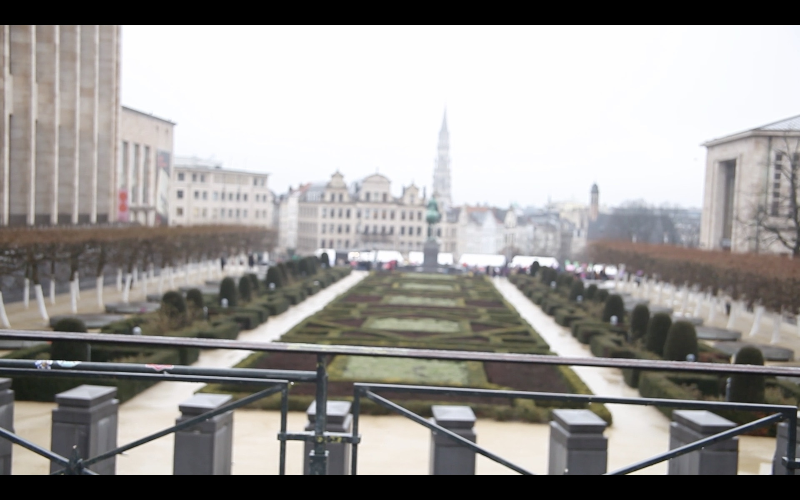

About
About Tawanen
A cinema and audiovisual practice rooted in craft, attention, and collective presence.
Working across production, post-production, labs, and screenings, Tawanen explores how body, movement, and material distill into image.
Tawanen ASBL is a Brussels-based cultural organization.

Cinema as a soft, steady defense against noise, speed, and forgetting.Tawanen
Our Mission
We are a network at the intersection of audiovisual arts, cinema, culture, and politics.
Our Vision
An image that precedes ready-made narratives.
Watch